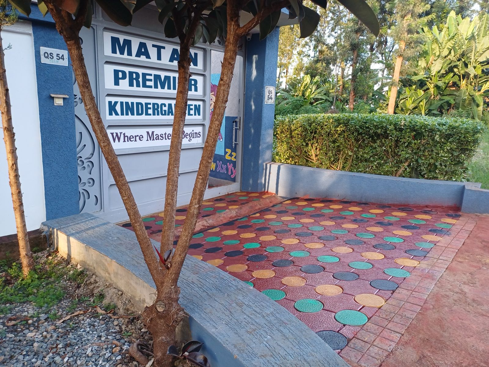
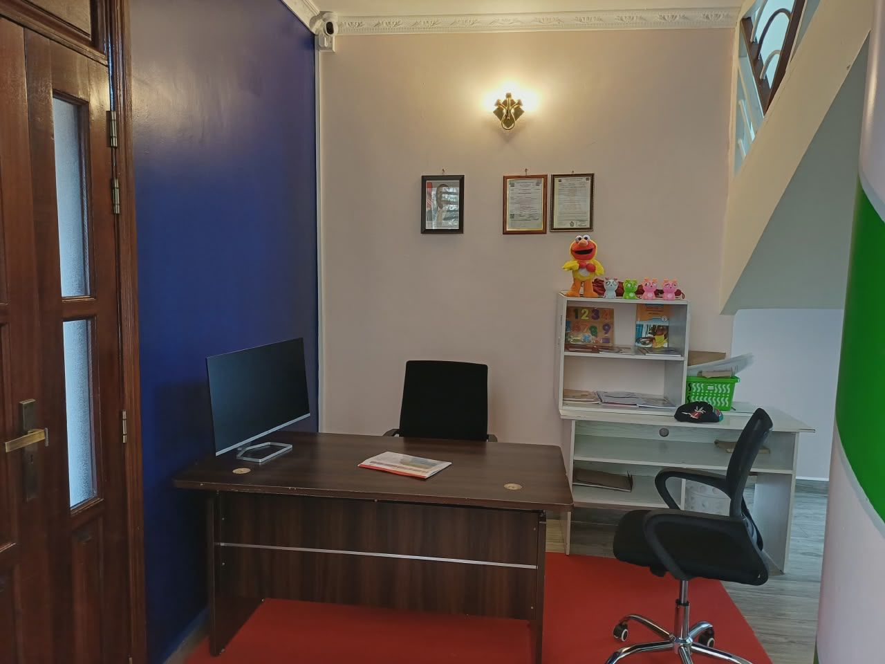
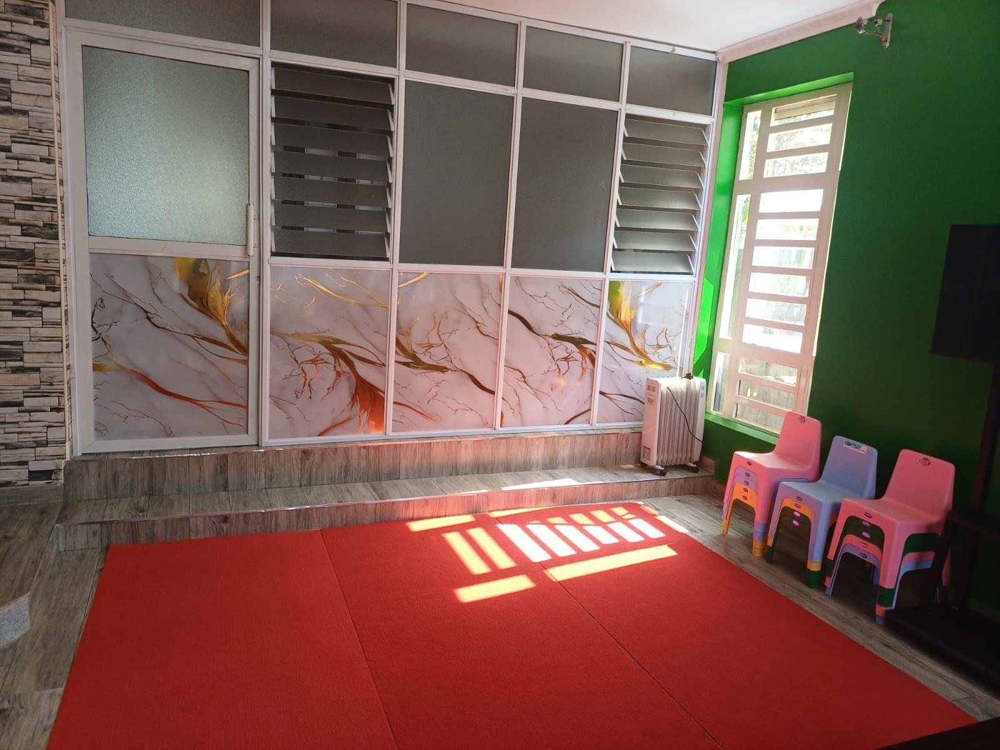
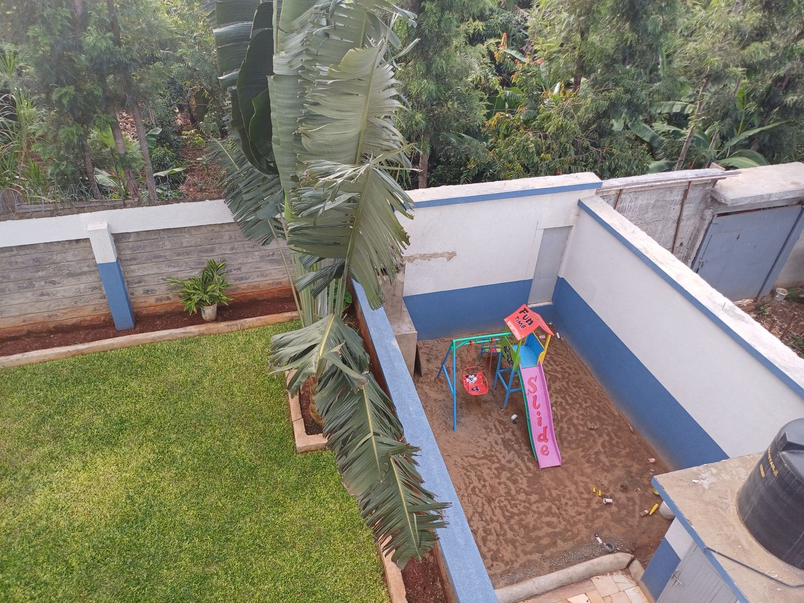

Playgroup
Gentle routines, sensory play and close attention as children take their first steps into school life.
A glimpse into the spaces, experiences and everyday moments that make Matan special.
Warm, welcoming spaces designed for young learners to feel comfortable, curious and ready to explore.


A welcoming first impression for children, parents and visitors.



Purposeful learning, play and exploration throughout the school day.



Gentle routines, sensory play and close attention as children take their first steps into school life.
Structured play, early literacy and numeracy, and growing independence in a warm classroom environment.
Building reading, writing and problem-solving skills while preparing confidently for the next stage of school.